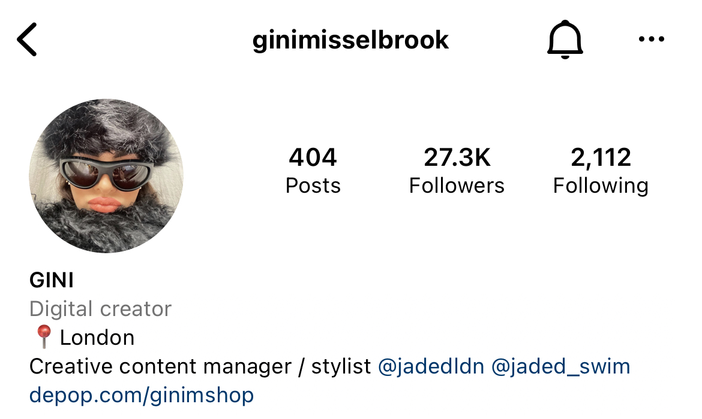
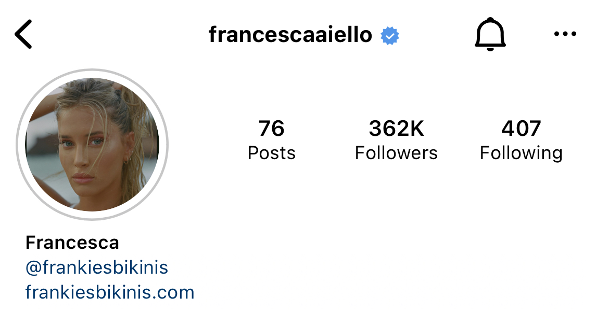

As we all know, Social Media is the top way for influencers, brands, and aspiring artists to get discovered in this day and age.
Below are some accounts to follow on Instagram if you're looking for new places to purchase clothing from, new influencers to follow, or inspiration for outfits, I have you covered!
Albert Ayal, a fashion publicist, started this account many years ago in hopes of bringing attention to designers who were yet to be discovered. He shares runway looks from shows and interacts with his followers which makes them feel like he is there for them. Not only does he post brands, but he posts job listings for people who need help and helps his followers find internships in the fashion industry. He has now grown his platform to 221k followers and has completed many goals of his which he shared when he was first starting out. Here is an article where you can read more about him and his story!
Gini is the creative content manager and a stylist at Jaded LDN, an up and coming fashion brand. She is an influencer who many may not know, but has the potential to be huge. Her sense of fashion, creativity and character are like no other. She seems to be her most authentic self and provides me with new ways to put outfits together daily.
As the Founder and CEO of Frankie's Bikinis, Francesca has definitely made her mark not only in the swimsuit industry, but the fashion industry too. Aiello started this brand at the age of 15 years old, and has now risen to the top with Victoria's Secret taking an $18 million stake in it. She is the true definition of a girl-boss. For more on Frankies Bikinis and Victoria's Secret, read the article here.
WGSN is an exclusive site which is focused on trend forecasting. Here you can find trend predictions for seasons up to 2024 (crazy, right?). For someone who wants to get involved in the fashion industry or who wants some more knowledge of it, this site is essentially your fashion bible. The information is backed up with data and it holds countless pieces of content. It could take you a year to fully dive into all of the statistics. Above is an exciting promotional video from their YouTube. Be sure to check out their other videos!
Vogue Runway works hard to update their information as soon as something in the world of fashion happens. Especially during any Fashion Week, this site is your source to everything you need. There are deep reviews of any shows, new releases, or designers. It is a comprehensive guide to fashion and beauty. You can search by the designer or by season to see any look from any show that you want to engage with.
Contrary to WGSN, Women's Wear Daily is a site that is open to all: no membership or login required. If desired, you can subscribe and pay a yearly amount, however there are plenty of articles available for free. WWD is essentially your news network for fashion. They post breaking news in the industry, constant updates, and reviews. If you are interested in getting more involved with the day-to-day updates and trends, this will be your main source of knowledge. Above is a video from their YouTube which captures Tommy Hilfiger's "Homecoming Spectacular"
Always wanted to know what it's like to model? Watch the videos below to see an insight on their daily lives!
Below are two of my favorite shows from the most recent runway season